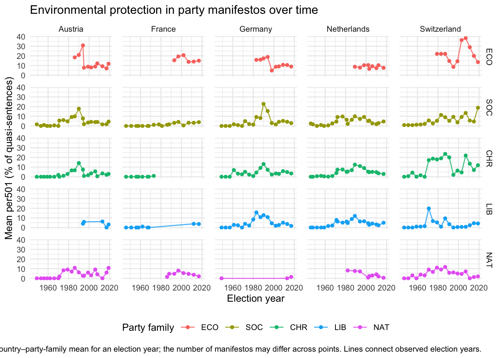

selected_countries <- c(
"Austria", "France", "Germany", "Netherlands", "Switzerland"
)
party_family_levels <- c("ECO", "SOC", "CHR", "LIB", "NAT")
cmp <- mp_maindataset()
country <- cmp %>%
filter(countryname %in% selected_countries) %>%
mutate(year = as.integer(date %/% 100)) %>%
filter(year >= 1940, year <= 2020)
party_family <- country %>%
mutate(
parfam_label = case_when(
parfam == 10 ~ "ECO",
parfam == 30 ~ "SOC",
parfam == 40 ~ "LIB",
parfam == 50 ~ "CHR",
parfam == 70 ~ "NAT",
TRUE ~ NA_character_
),
countryname = factor(countryname, levels = selected_countries),
parfam_label = factor(parfam_label, levels = party_family_levels)
) %>%
filter(!is.na(parfam_label))Environmental protection in party manifestos
1. Introduction
Climate change has become one of the most contested political issues in Western Europe. This project examines how emphasis on environmental protection in party manifestos varies across five countries (Austria, France, Germany, the Netherlands, and Switzerland) and selected party families, using the Manifesto Project dataset obtained from the WZB Berlin Social Science Center (https://manifesto-project.wzb.eu). This analysis focuses on per501 (Environmental Protection), a category in domain 5 (Welfare and Quality of Life) of the dataset.
2. Data
3. Descriptive Statistics
sample_overview <- party_family %>%
summarise(
n_manifestos = n(),
missing_per501 = sum(is.na(per501)),
zero_per501 = sum(per501 == 0, na.rm = TRUE),
share_zero = mean(per501 == 0, na.rm = TRUE),
nonzero_per501 = sum(!is.na(per501) & per501 != 0)
)
knitr::kable(
sample_overview,
digits = 3,
caption = "Overview of the selected manifesto observations"
)| n_manifestos | missing_per501 | zero_per501 | share_zero | nonzero_per501 |
|---|---|---|---|---|
| 495 | 0 | 96 | 0.194 | 399 |
# First calculate each observed mean by countries and party families
country_family_means <- party_family %>%
group_by(countryname, parfam_label) %>%
summarise(
mean_per501 = mean(per501, na.rm = TRUE),
n_manifestos = n(),
.groups = "drop"
)
# Then average those country means, giving each observed country equal weight.
family_means <- country_family_means %>%
group_by(parfam_label) %>%
summarise(
mean_of_country_means = mean(mean_per501, na.rm = TRUE),
n_countries = n(),
.groups = "drop"
)
knitr::kable(
family_means,
digits = 2,
caption = "Party family means averaged across observed country means"
)| parfam_label | mean_of_country_means | n_countries |
|---|---|---|
| ECO | 14.59 | 5 |
| SOC | 4.03 | 5 |
| CHR | 4.62 | 5 |
| LIB | 3.46 | 5 |
| NAT | 3.64 | 5 |
# Summarise manifesto scores within each country, election year, and family.
yearly_summary <- party_family %>%
group_by(countryname, year, parfam_label) %>%
summarise(
mean_per501 = mean(per501, na.rm = TRUE),
n_manifestos = n(),
.groups = "drop"
)
sum(yearly_summary$n_manifestos)[1] 4953.1 Identification of data gaps
decades <- seq(
from = min(party_family$year, na.rm = TRUE) %/% 10 * 10,
to = max(party_family$year, na.rm = TRUE) %/% 10 * 10,
by = 10
)
gap_table <- party_family %>%
mutate(decade = year %/% 10 * 10) %>%
count(countryname, parfam_label, decade, name = "n_manifestos") %>%
complete(
countryname,
parfam_label,
decade = decades,
fill = list(n_manifestos = 0L)
) %>%
arrange(countryname, parfam_label, decade) %>%
pivot_wider(
names_from = decade,
values_from = n_manifestos
)
knitr::kable(
gap_table,
caption = "Number of selected manifestos by country, party family, and decade"
)| countryname | parfam_label | 1940 | 1950 | 1960 | 1970 | 1980 | 1990 | 2000 | 2010 |
|---|---|---|---|---|---|---|---|---|---|
| Austria | ECO | 0 | 0 | 0 | 0 | 1 | 4 | 3 | 4 |
| Austria | SOC | 1 | 3 | 2 | 4 | 2 | 4 | 3 | 3 |
| Austria | CHR | 1 | 3 | 2 | 4 | 2 | 4 | 3 | 3 |
| Austria | LIB | 0 | 0 | 0 | 0 | 0 | 2 | 0 | 3 |
| Austria | NAT | 1 | 3 | 2 | 4 | 2 | 4 | 5 | 3 |
| France | ECO | 0 | 0 | 0 | 0 | 0 | 3 | 2 | 2 |
| France | SOC | 1 | 3 | 3 | 2 | 3 | 2 | 2 | 2 |
| France | CHR | 1 | 3 | 3 | 2 | 0 | 0 | 0 | 0 |
| France | LIB | 1 | 3 | 3 | 0 | 0 | 0 | 0 | 3 |
| France | NAT | 0 | 0 | 0 | 0 | 2 | 2 | 2 | 2 |
| Germany | ECO | 0 | 0 | 0 | 0 | 2 | 3 | 3 | 2 |
| Germany | SOC | 1 | 2 | 3 | 2 | 3 | 3 | 3 | 2 |
| Germany | CHR | 2 | 3 | 3 | 2 | 3 | 3 | 3 | 2 |
| Germany | LIB | 1 | 2 | 3 | 2 | 3 | 3 | 3 | 2 |
| Germany | NAT | 2 | 0 | 0 | 0 | 0 | 0 | 0 | 2 |
| Netherlands | ECO | 0 | 0 | 0 | 0 | 1 | 2 | 3 | 3 |
| Netherlands | SOC | 2 | 3 | 2 | 6 | 7 | 2 | 3 | 4 |
| Netherlands | CHR | 6 | 9 | 6 | 10 | 9 | 6 | 6 | 6 |
| Netherlands | LIB | 2 | 3 | 3 | 6 | 8 | 4 | 8 | 6 |
| Netherlands | NAT | 0 | 0 | 0 | 0 | 2 | 1 | 3 | 4 |
| Switzerland | ECO | 0 | 0 | 0 | 1 | 2 | 3 | 3 | 6 |
| Switzerland | SOC | 2 | 6 | 4 | 6 | 4 | 6 | 2 | 3 |
| Switzerland | CHR | 1 | 3 | 2 | 6 | 4 | 6 | 5 | 7 |
| Switzerland | LIB | 1 | 3 | 2 | 3 | 2 | 6 | 3 | 3 |
| Switzerland | NAT | 1 | 3 | 2 | 6 | 4 | 9 | 5 | 4 |
zero_by_decade <- party_family %>%
mutate(decade = year %/% 10 * 10) %>%
group_by(decade) %>%
summarise(
n_manifestos = n(),
n_zero = sum(per501 == 0, na.rm = TRUE),
share_zero = mean(per501 == 0, na.rm = TRUE),
.groups = "drop"
)
knitr::kable(
zero_by_decade,
digits = 3,
caption = "Zero per501 scores by decade"
)| decade | n_manifestos | n_zero | share_zero |
|---|---|---|---|
| 1940 | 27 | 22 | 0.815 |
| 1950 | 55 | 40 | 0.727 |
| 1960 | 45 | 18 | 0.400 |
| 1970 | 66 | 4 | 0.061 |
| 1980 | 66 | 1 | 0.015 |
| 1990 | 82 | 5 | 0.061 |
| 2000 | 73 | 1 | 0.014 |
| 2010 | 81 | 5 | 0.062 |
zero_by_family <- party_family %>%
group_by(parfam_label) %>%
summarise(
n_manifestos = n(),
n_zero = sum(per501 == 0, na.rm = TRUE),
share_zero = mean(per501 == 0, na.rm = TRUE),
.groups = "drop"
)
knitr::kable(
zero_by_family,
digits = 3,
caption = "Zero per501 scores by party family"
)| parfam_label | n_manifestos | n_zero | share_zero |
|---|---|---|---|
| ECO | 53 | 0 | 0.000 |
| SOC | 121 | 20 | 0.165 |
| CHR | 144 | 36 | 0.250 |
| LIB | 97 | 24 | 0.247 |
| NAT | 80 | 16 | 0.200 |
4. Visualisation
# Country-by-family time series; points are means across manifestos in each election year.
ggplot(yearly_summary, aes(x = year, y = mean_per501, colour = parfam_label, group = parfam_label)) +
geom_line(linewidth = 0.5, alpha = 0.8) +
geom_point(size = 1.2) +
facet_grid(parfam_label ~ countryname, drop = FALSE) +
labs(
title = "Environmental protection in party manifestos over time",
x = "Election year",
y = "Mean per501 (% of quasi-sentences)",
colour = "Party family",
caption = "Each point is a country–party-family mean for an election year; the number of manifestos may differ across points. Lines connect observed election years."
) +
theme_minimal(base_size = 10) +
theme(
legend.position = "bottom",
panel.spacing = grid::unit(0.7, "lines")
)
5. Results
This section reports descriptive patterns in the selected manifesto observations. The data are unevenly distributed across countries, party families, and decades, so comparisons should be read in light of these differences in coverage.
5.1 Coverage across countries, party families, and decades
Some country–party-family combinations have no manifesto observations in particular decades. These are gaps in the selected sample; they should not be interpreted as per501 scores of zero.
CHR
- France: no selected manifesto observations from the 1980s onward.
ECO
- Austria: no selected manifesto observations from the 1940s through the 1970s.
- France: no selected manifesto observations from the 1940s through the 1980s.
- Germany: no selected manifesto observations from the 1940s through the 1970s.
- The Netherlands: no selected manifesto observations from the 1940s through the 1970s.
- Switzerland: no selected manifesto observations from the 1940s through the 1960s.
LIB
- Austria: no selected manifesto observations from the 1940s through the 1960s, or in the 2000s.
- France: no selected manifesto observations from the 1970s through the 2000s.
NAT
- France: no selected manifesto observations from the 1940s through the 1970s.
- Germany: no selected manifesto observations from the 1950s through the 2000s.
- The Netherlands: no selected manifesto observations from the 1940s through the 1970s.
5.2 Observations with a zero per501 score
Of the 495 selected manifesto observations, 96 have a per501 score of zero (19.4%). A zero indicates that no quasi-sentences in that manifesto were coded under per501, Environmental Protection. It is a recorded score and is distinct from a decade or country–party-family combination with no selected manifesto observation. These descriptive data show where zero scores occur but do not establish why a party manifesto contains no quasi-sentences coded under this category.
5.3 Variation across party families and over time
Across the selected observations, ECO has the highest reported aggregate mean per501 score (14.59). The reported means for the other party families are lower: CHR (4.62), SOC (4.03), NAT (3.64), and LIB (3.46). Each aggregate is the simple average of the observed country-specific means for that family, so each included country receives equal weight. These averages do not account for differences over time and should be read alongside the country-by-family time-series panels.
The panels show a broadly similar pattern over time for CHR, LIB, and SOC outside France, although the trajectories are not identical across countries. Several party-family series rise during the 1990s, particularly CHR, ECO, and SOC in Austria and Germany; a comparable increase is not apparent in NAT. The size and timing of changes vary by country and family.
The Swiss CHR and ECO series also appear to differ from the corresponding patterns in other countries. The direction and timing of these changes vary within the period, rather than forming one uniform trajectory.